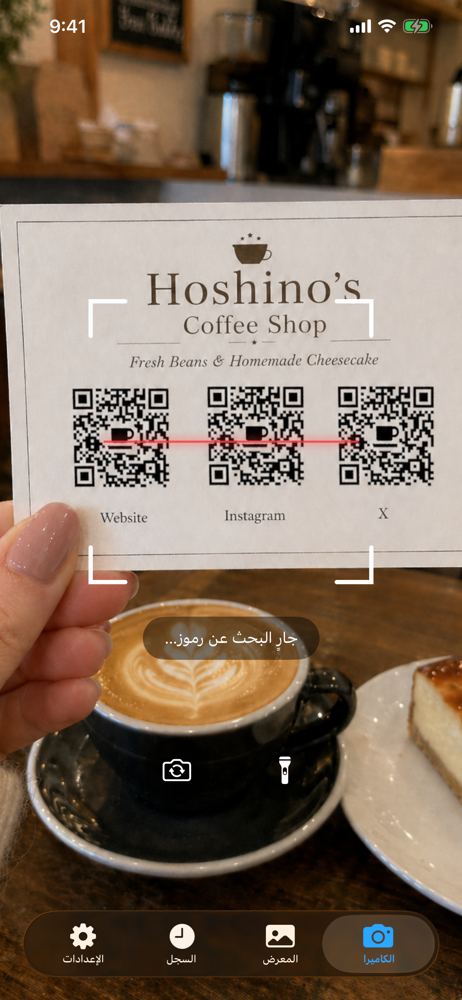
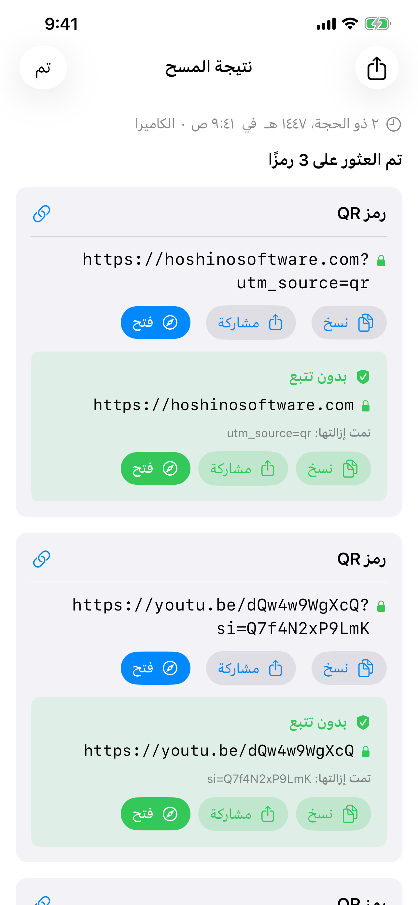
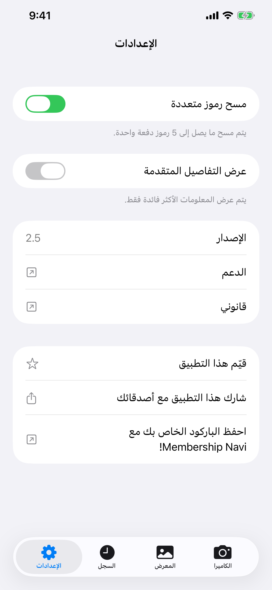

قارئ الرموز
يقوم قارئ الرموز بمسح الباركود ورموز QR باستخدام كاميرا iPhone أو أي صورة من مكتبة صورك. يعمل بشكل كامل دون اتصال بالإنترنت، ولا يخزن أي شيء في السحابة، ولا يعرض إعلانات أبدًا.
تنزيل


قارئ الرموز متاح للتنزيل مجانًا من App Store. لا يلزم حساب. يتطلب iOS 26 أو إصدار أحدث. ترقية Premium اختيارية لمرة واحدة تفتح السجل الطويل، والبحث في السجل، ومسح الرموز المتعددة، والتفاصيل المتقدمة.
الدعم
هل لديك سؤال، أو وجدت خللًا، أو تحتاج مساعدة في التطبيق؟ تواصل معنا. نقرأ كل رسالة.
قبل أن تكتب
تجد إجابات لكثير من المشكلات الشائعة في الدليل والأسئلة الشائعة أدناه. بعض الفحوصات السريعة:
- الكاميرا لا تعمل؟ انتقل إلى إعدادات iPhone ← الخصوصية والأمان ← الكاميرا ← فعّل الوصول لتطبيق قارئ الرموز.
- لا تجد السجل؟ اضغط على تبويب السجل. تحتفظ الخطة المجانية بآخر 20 عملية مسح لمدة 7 أيام؛ بينما تحتفظ ترقية Premium بما يصل إلى 10,000 عملية مسح بدون حد زمني.
- الرمز لا يُمسح؟ تأكد من توفر إضاءة جيدة وثبّت الرمز. جرّب وضع المعرض إذا كان لديك ملف صورة.
- التطبيق يتعطل؟ أغلقه إجباريًا ثم أعد تشغيله. إذا استمرت المشكلة، راسلنا عبر البريد الإلكتروني مع ذكر طراز iPhone ونسخة iOS.
الأسئلة الشائعة
- هل يحتاج اتصالًا بالإنترنت؟
لا. يعمل قارئ الرموز بشكل كامل دون اتصال. - هل يجمع بياناتي؟
لا. لا يُرفع أي شيء إلى أي مكان. يُخزَّن سجل المسح على جهازك فقط. - هل يصل إلى مكتبة صوري بأكملها؟
لا. في علامة تبويب المعرض، تختار صورة واحدة باستخدام منتقي الصور النظامي. لا يحصل قارئ الرموز على إذن الوصول إلى مكتبتك. - لماذا يستغرق وضع الرموز المتعددة وقتًا أطول قليلًا؟
وضع الرموز المتعددة (ميزة Premium) يكتشف ما يصل إلى 5 رموز في وقت واحد. تجمع الكاميرا الرموز عبر نافذة زمنية قصيرة من الإطارات لضمان التقاط جميع الرموز المرئية قبل عرض النتيجة. - كم تُحتفظ بسجل المسح؟
تحتفظ الخطة المجانية بآخر 20 عملية مسح لمدة تصل إلى 7 أيام. وتحتفظ ترقية Premium بما يصل إلى 10,000 عملية مسح بدون حد زمني، وتضيف البحث في النص الكامل. - لماذا لا ينتقل إلى الرابط تلقائيًا؟
هذا مقصود. رموز QR المزيفة أو الخبيثة شائعة في مواقف السيارات وطاولات المطاعم وأماكن أخرى. إظهار الرابط قبل فتحه يتيح لك التحقق من أنه آمن.
الدليل



الكاميرا
تفتح علامة تبويب الكاميرا وتبدأ المسح فورًا. وجّه هاتفك نحو أي باركود أو رمز QR وسيكتشفه التطبيق تلقائيًا. يُشترط منح إذن الكاميرا. إن لم تمنحه بعد، ستظهر نافذة طلب الإذن. اضغط على فتح الإعدادات وفعّل وصول الكاميرا لتطبيق قارئ الرموز.
- المصباح اليدوي: اضغط على زر المصباح لإضاءة البيئات المظلمة. متاح فقط مع الكاميرا الخلفية.
- الكاميرا الأمامية: اضغط على زر التدوير للتبديل بين الكاميرا الخلفية والأمامية. مفيد حين تكون الكاميرا الخلفية غير متاحة (مثلًا عند تلفها).
المعرض
تتيح لك علامة تبويب المعرض مسح الرموز من صورة موجودة. اضغط على اختيار صورة لتحديد أي صورة من مكتبتك. تُشارَك مع التطبيق الصورة المحددة فقط. لا يطلب قارئ الرموز الوصول إلى مكتبة صورك بأكملها.
بعد اختيار صورة، يمسحها التطبيق ويعرض النتيجة فورًا. وإن لم يُعثر على أي رمز، ستظهر تنبيه يخبرك بذلك.
السجل
تُحفظ كل عملية مسح تلقائيًا في علامة تبويب السجل. تحتفظ الخطة المجانية بآخر 20 عملية مسح لمدة تصل إلى 7 أيام، وتُزال الأقدم منها تلقائيًا عند الوصول إلى الحد الأقصى. وتحتفظ ترقية Premium بما يصل إلى 10,000 عملية مسح بدون حد زمني، وتضيف البحث في النص الكامل.
- عرض مسح سابق: اضغط على أي صف لإعادة فتح النتيجة كاملة.
- حذف إدخال واحد: اسحب الصف نحو اليسار واضغط على حذف.
- حذف الكل: اضغط على أيقونة سلة المهملات في الزاوية العلوية اليمنى.
- تسمية المصدر: يوضح كل إدخال ما إذا كان مصدره الكاميرا أو المعرض أو المشاركة.
- البحث (Premium): يظهر شريط بحث في أعلى القائمة. اكتب أي نص لتصفية الإدخالات أثناء الكتابة؛ يبحث في القيمة المفككة لكل رمز.
الإعدادات
تُفتح علامة تبويب الإعدادات بصف حالة Premium في الأعلى، يليه مفاتيح الميزات، ثم معلومات التطبيق.
صف Premium
إن لم تشترِ الترقية بعد، فسترى صف الترقية إلى Premium الذي يفتح شاشة الشراء، إضافة إلى صف استعادة المشتريات لاستعادة الوصول إن سبق لك الشراء بمعرّف Apple هذا (مثلًا بعد إعادة التثبيت أو على جهاز جديد). بعد الترقية، يتحوّل الصف إلى رسالة شكر باللون الأخضر.
وضع الرموز المتعددة (Premium)
بشكل افتراضي، يتوقف قارئ الرموز فور اكتشاف رمز واحد. مع Premium، يمكنك تشغيل وضع الرموز المتعددة لاكتشاف ما يصل إلى 5 رموز دفعة واحدة، وهو مفيد لبطاقات العمل وأوراق المنتجات وأي صورة تحتوي على رموز متعددة جنبًا إلى جنب. تواصل الكاميرا المسح لفترة وجيزة بعد الاكتشاف الأول لجمع جميع الرموز المرئية قبل عرض النتائج.
إظهار التفاصيل المتقدمة (Premium)
مع Premium، يمكنك تشغيل إظهار التفاصيل المتقدمة للكشف عن البيانات الوصفية التقنية إلى جانب كل نتيجة مسح: مثل إصدار QR ومستوى تصحيح الأخطاء ونمط القناع وبنية الباركود (أحرف البداية/النهاية والرقم التدقيقي). تظهر هذه المعلومات في صفحة نتيجة المسح وفي صفوف علامة تبويب السجل.
Premium
قارئ الرموز مجاني التنزيل، وتجربة المسح الأساسية مجانية أيضًا. ترقية Premium هي عملية شراء داخل التطبيق لمرة واحدة، وتفتح أربع ميزات قوية:
- السجل الطويل: احتفظ بما يصل إلى 10,000 عملية مسح بدون حد زمني. الخطة المجانية محدودة بـ 20 إدخالًا / 7 أيام.
- البحث في السجل: يظهر شريط بحث في علامة تبويب السجل. اعثر على أي مسح سابق فورًا حسب المحتوى.
- مسح الرموز المتعددة: اكتشف ما يصل إلى 5 رموز في كل مسحة.
- التفاصيل المتقدمة: اطّلع على البيانات الوصفية للترميز وبنية الباركود والبيانات المفككة الكاملة لكل رمز.
الشراء عبارة عن دفعة واحدة، ليس اشتراكًا. لا توجد رسوم متكررة ولا تتدخل خوادم؛ يبقى كل شيء على جهازك. الشراء متوافق مع المشاركة العائلية، فيحصل أي عضو في مجموعة Apple العائلية على الترقية تلقائيًا.
للشراء أو الاستعادة، انتقل إلى علامة تبويب الإعدادات. يفتح صف الترقية إلى Premium شاشة الشراء؛ ويستعيد صف استعادة المشتريات عملية شراء سابقة بمعرّف Apple هذا. تتضمن شاشة الشراء أيضًا زر استعادة المشتريات إن وصلت إليها أولًا.
نتائج المسح
عند اكتشاف رمز، يعرض قارئ الرموز محتواه قبل القيام بأي شيء. ترى دائمًا البيانات الخام أولًا، مع زرَّي نسخ ومشاركة. إن احتوى الرمز على رابط URL (شائع في رموز QR)، يظهر زر فتح. الضغط عليه يفتح الرابط في متصفحك الافتراضي لا في متصفح داخل التطبيق. لا تُجمع أي بيانات تصفح.
يتعرف قارئ الرموز تلقائيًا على أنواع الرموز الخاصة ويعرض إجراءات سياقية:
| نوع الرمز | ما يمكنك فعله |
|---|---|
| 🌐 URL / رابط | فتح في المتصفح الافتراضي · نسخ · مشاركة |
| 📶 شبكة Wi-Fi | الاتصال مباشرة · نسخ كلمة المرور |
| 👤 جهة اتصال (vCard / MECARD) | الحفظ في جهات الاتصال مع معاينة |
| 📅 حدث تقويم | إضافة إلى التقويم |
| ✉️ بريد إلكتروني | إنشاء بريد مُعبأ مسبقًا |
| 💬 رسالة SMS | إرسال رسالة |
| 📞 رقم هاتف | اتصال |
| 📍 موقع جغرافي | الفتح في الخرائط |
| 📹 FaceTime | FaceTime أو FaceTime صوت |
| ₿ بيتكوين | نسخ العنوان |
| ✈️ بطاقة الصعود | تفاصيل الرحلة مستخرجة من Aztec / PDF417 |
مع تفعيل إظهار التفاصيل المتقدمة (ميزة Premium، في الإعدادات)، يظهر قسمان إضافيان في صفحة النتائج:
- البيانات المفككة: السلسلة الخام المشفرة داخل الباركود قبل أي معالجة.
- البنية: التفصيل التقني للباركود: أحرف البداية والنهاية والرقم التدقيقي وأنماط الحراسة وعناصر مشابهة بحسب نوع الرمز.
بالنسبة لرموز QR، تظهر أيضًا شرائح بيانات وصفية تعرض رقم الإصدار ومستوى تصحيح الأخطاء ونمط القناع.
الكشف عن معاملات التتبع
حين يحتوي رابط URL على معاملات تتبع، يعرض قارئ الرموز بطاقة خضراء بدون تتبع أسفل البيانات الخام. تعرض البطاقة الرابط النظيف، وسطرًا بعنوان تمت إزالة: يسرد المعاملات التي أُزيلت (علامات UTM ومعرفات النقر من Facebook وGoogle Ads وMicrosoft وTikTok وغيرها الكثير)، وأزرار نسخ / مشاركة / فتح، تعمل جميعها على الرابط النظيف. ستصل إلى الصفحة ذاتها دون أن يُتتبع نشاطك.
المسح من تطبيق آخر
يمكنك مسح رمز يظهر في صورة داخل أي تطبيق آخر (رسالة أو بريد إلكتروني أو عارض مستندات أو متصفح ويب) دون مغادرة ذلك التطبيق.
باستخدام المشاركة:
- افتح الصورة في معرضك أو في أي تطبيق، ثم اضغط على زر مشاركة.
- في قائمة التطبيقات التي تظهر، ابحث عن قارئ الرموز واضغط عليه. إن لم تره، مرر للنهاية واضغط على المزيد.
- يفتح التطبيق ويمسح الصورة تلقائيًا.
باستخدام الإجراءات:
- افتح الصورة في معرضك أو في أي تطبيق، ثم اضغط على زر مشاركة.
- مرر صف الإجراءات أسفل قائمة التطبيقات واضغط على Scan for Codes.
- يفتح التطبيق ويمسح الصورة تلقائيًا.
ودجت الشاشة الرئيسية
يمكنك إضافة ودجت إلى شاشتك الرئيسية كاختصار أكبر للتطبيق. الضغط عليه يفتح الكاميرا مباشرة جاهزة للمسح. تتوفر الودجت بثلاثة أحجام (صغير ومتوسط وكبير)، لتختار ما يناسب تخطيط شاشتك الرئيسية.
- اضغط مطولًا على منطقة فارغة في شاشتك الرئيسية حتى تبدأ الأيقونات بالاهتزاز.
- اضغط على زر + في الزاوية العلوية اليسرى.
- ابحث عن قارئ الرموز.
- اختر حجمًا واضغط على إضافة ودجت.
- يمكنك تغيير حجمه لاحقًا بالضغط المطوّل على الودجت واختيار تعديل الودجت.
Control Center
Control Center هو اللوحة التي تنزلق حين تسحب من الزاوية العلوية اليمنى للشاشة. يمكنك إضافة زر قارئ الرموز هناك لتشغيل الكاميرا بنقرة واحدة من أي مكان، بما في ذلك شاشة القفل أو أثناء استخدام تطبيق آخر.
- اسحب من الزاوية العلوية اليمنى لفتح Control Center.
- اضغط على زر + للدخول إلى وضع التعديل.
- ابحث عن قارئ الرموز في القائمة واضغط عليه للإضافة.
- يمكنك سحبه لإعادة تموضعه وتغيير حجمه أثناء وضع التعديل.
أنواع الرموز المدعومة
| الرمز | ملاحظات |
|---|---|
| QR Code | أكثر رموز 2D شيوعًا. يُستخدم للروابط والشبكات اللاسلكية وجهات الاتصال وغيرها |
| Micro QR | نسخة مضغوطة من QR Code للملصقات الصغيرة ذات المساحة المحدودة |
| Aztec | يُستخدم في بطاقات الصعود وتذاكر وسائل النقل |
| Data Matrix | شائع في التصنيع والرعاية الصحية واللوجستيات |
| PDF417 | يُستخدم في رخص القيادة وبطاقات الصعود وملصقات الشحن |
| Micro PDF417 | PDF417 مضغوط للعناصر الصغيرة كالتغليف الدوائي |
| EAN-8 | باركود قصير للمنتجات الصغيرة في التجزئة |
| EAN-13 | باركود التجزئة المعياري الموجود على معظم منتجات المستهلك في العالم |
| UPC-E | باركود مضغوط يُستخدم في التغليف الصغير بالتجزئة في الولايات المتحدة وكندا |
| Code 39 | أحد أقدم أنواع الباركود، شائع في البيئات الصناعية |
| Code 93 | خليفة Code 39 ذو الكثافة الأعلى |
| Code 128 | باركود عالي الكثافة مستخدم على نطاق واسع في اللوجستيات والشحن |
| ITF-14 | باركود مكوّن من 14 رقمًا يُطبع على صناديق الشحن المقوّاة |
| Codabar | يُستخدم في المكتبات وبنوك الدم وبعض شركات الشحن |
| GS1 DataBar | باركود مضغوط للعناصر الصغيرة كالمنتجات الطازجة |
| GS1 DataBar Expanded | نسخة موسّعة تحمل بيانات إضافية كالوزن وتاريخ الانتهاء |
غير مدعوم:
| الرمز | ملاحظات |
|---|---|
| EAN-2 / EAN-5 (ملحقات) | ملحقات أرقام قصيرة مرفقة بـ EAN-13، تُستخدم لأرقام إصدارات المجلات وتسعير الكتب |
| rMQR | Micro QR المستطيل، نوع QR مضغوط أحدث مصمم للملصقات الضيقة |
| MaxiCode | رمز نقطي ثنائي الأبعاد تستخدمه UPS على ملصقات الشحن |
| SP Code | باركود يمكّن إمكانية الوصول في اليابان ويشفّر بيانات صوتية منطوقة |
| الرموز البريدية | باركود بريدي رباعي الحالات تستخدمه خدمات البريد الوطنية (USPS Intelligent Mail وRoyal Mail وAustralia Post وJapan Post وغيرها) |
| رموز التطبيقات الخاصة | رموز بصرية مخصصة لا يمكن مسحها إلا بالتطبيق المُصدر لها |
رموز تجريبية
امسحها مباشرة من هذه الشاشة بالكاميرا، أو التقط لقطة شاشة واستخدم علامة تبويب المعرض.
 | QR Code رابط URL مع معاملات تتبع https://hoshinosoftware.com?utm_source=review&utm_campaign=demo |
 | QR Code شبكة Wi-Fi WIFI:S:example-wifi;T:WPA;P:example-password;; |
 | QR Code بريد إلكتروني mailto:test@example.com |
 | QR Code جهة اتصال (vCard) BEGIN:VCARD VERSION:3.0 N:Last;First FN:First Last ORG:Company TITLE:Job Title ADR:;;Street;City;CA;90401;USA TEL;WORK;VOICE: TEL;CELL:+1234567890123 TEL;FAX: EMAIL;WORK;INTERNET:example@example.com URL:https://example.com END:VCARD |
 | Micro QR QR مضغوط للملصقات الصغيرة HELLO |
 | Aztec (Full) وسائل النقل / بطاقات الصعود AZTEC-DEMO-CODE |
 | Aztec (Compact) نوع مضغوط للملصقات الصغيرة AZTEC-DEMO-CODE |
 | Data Matrix (Square) التصنيع / الرعاية الصحية DATAMATRIX |
 | Data Matrix (Rectangular) نوع مستطيل للملصقات الضيقة DATAMATRIX |
 | PDF417 وثائق الهوية / ملصقات الشحن PDF417 SAMPLE DATA |
 | Micro PDF417 PDF417 مضغوط للعناصر الصغيرة MICROPDF417 SAMPLE DATA |
 | EAN-13 باركود التجزئة 5901234123457 |
 | UPC-E باركود مضغوط (الولايات المتحدة/كندا) 01234565 |
 | Code 128 اللوجستيات / الشحن CODE-128-DEMO |
 | ITF-14 باركود صندوق الشحن 12345678901231 |
 | GS1 DataBar باركود مضغوط للعناصر الصغيرة 0112345678901231 |
قانوني
سياسة الخصوصية
آخر تحديث: أبريل 2026
مقدمة
قارئ الرموز مبني على مبدأ بسيط: بياناتك ملك لك. توضح سياسة الخصوصية هذه المعلومات التي يصل إليها التطبيق وكيفية التعامل معها.
الوصول إلى الكاميرا
يستخدم التطبيق كاميرا جهازك لمسح الباركود ورموز QR في الوقت الفعلي. تتم معالجة تغذية الكاميرا بالكامل على جهازك. لا يتم تخزين أي صور أو إطارات فيديو أو تحميلها أو مشاركتها مطلقًا.
سجل المسح
تُحفظ نتائج المسح محليًا على جهازك باستخدام تقنية التخزين المدمجة في Apple. لا تغادر هذه البيانات جهازك أبدًا ولا تُرسل إلى أي خادم. يمكنك حذف سجل المسح في أي وقت من داخل التطبيق.
لا حاجة لاتصال بالإنترنت
يعمل قارئ الرموز بالكامل دون اتصال بالإنترنت. لا يُرسل التطبيق أي طلبات شبكة. بياناتك لا تغادر جهازك أبدًا.
لا جمع للبيانات
لا نجمع أي معلومات شخصية أو نخزنها أو نعالجها. لا يتطلب التطبيق حسابًا أو أي شكل من أشكال التسجيل.
المشتريات داخل التطبيق
يقدّم قارئ الرموز ترقية Premium اختيارية لمرة واحدة. تتم معالجة المشتريات بالكامل عبر StoreKit من Apple؛ ولا نتلقى أي معلومات شخصية تتعلق بشرائك. يحتفظ التطبيق فقط بإشارة إلى أنك تملك الترقية. وفيما عدا ما تتولاه Apple ضمن متجر App Store، لا تغادر بيانات الشراء جهازك.
خدمات الأطراف الثالثة
لا يستخدم قارئ الرموز أي خدمات تحليلات أو إعلانات أو تتبع تابعة لأطراف ثالثة. لا تُشارَك أي بيانات مع أطراف ثالثة.
خصوصية الأطفال
نظرًا لعدم جمع أي بيانات شخصية، فإن قارئ الرموز آمن لمستخدمي جميع الأعمار ويتوافق مع قانون COPPA واللوائح المماثلة حول العالم.
التغييرات على هذه السياسة
قد نقوم بتحديث سياسة الخصوصية هذه من وقت لآخر. تسري التغييرات فور نشرها. نشجعك على مراجعة هذه الصفحة بشكل دوري.
تواصل معنا
لأي استفسارات حول سياسة الخصوصية هذه: support [at] hoshinosoftware [dot] com
شروط الخدمة
آخر تحديث: أبريل 2026
قبول الشروط
بتنزيل قارئ الرموز أو استخدامه، فإنك توافق على الالتزام بشروط الخدمة هذه. إذا كنت لا توافق، يرجى عدم استخدام التطبيق.
الترخيص
تمنحك Hoshino Software ترخيصًا شخصيًا غير قابل للنقل وغير حصري لاستخدام قارئ الرموز على أجهزة Apple الخاصة بك وفقًا لهذه الشروط وشروط خدمة App Store من Apple.
الاستخدام المسموح به
يمكنك استخدام قارئ الرموز فقط لأغراض مشروعة. توافق على عدم استخدام التطبيق بأي طريقة تنتهك القوانين أو اللوائح المعمول بها.
إخلاء المسؤولية عن الضمانات
يُقدَّم قارئ الرموز "كما هو" دون أي ضمان من أي نوع، صريح أو ضمني. لا نضمن أن يكون التطبيق خاليًا من الأخطاء أو غير منقطع أو مناسبًا لأي غرض معين.
تحديد المسؤولية
إلى أقصى حد يسمح به القانون المعمول به، لن تكون Hoshino Software مسؤولة عن أي أضرار مباشرة أو غير مباشرة أو عرضية أو خاصة أو تبعية ناجمة عن استخدامك لقارئ الرموز أو عدم قدرتك على استخدامه.
التغييرات على هذه الشروط
قد نقوم بتحديث شروط الخدمة هذه من وقت لآخر. استمرار استخدام التطبيق بعد نشر التغييرات يُعدّ قبولًا للشروط المعدَّلة.
القانون الحاكم
تخضع هذه الشروط لقوانين الولاية القضائية التي تعمل فيها Hoshino Software.
تواصل معنا
لأي استفسارات حول شروط الخدمة هذه: support [at] hoshinosoftware [dot] com